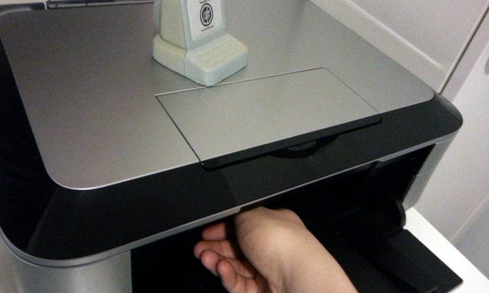

OpenSuse 12.2's Package Manager
2013-01-19
I'm posting this mini-entry as it took so much effort to find the name of OpenSuse's package manager, especially considering that it wasn't my computer. OpenSuse 12's package manager is called zypper! Example of usage:
# zypper install emacs